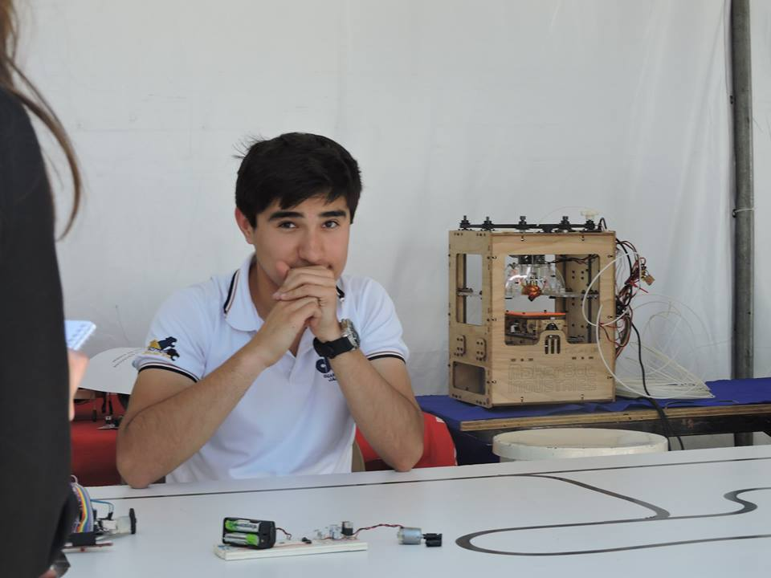

Experiencia laboral

C&I Robotics (2016-2020)
Desarrollador de software y hardware.
Mi primer empleo orientado al diseño y temas de ingenieria, empresa de un colega en ese momento recien egresado de la ingenieria mecatronica, orientada a la veneta de componentes y servicio de ingenieria donde mi papel era diseñar los esquemas electricos, el pcb, el maquinado de pcb con cnc, y despues en caso de ser requerido programar un microcontrolador o PLC.
Lypsa (junio 2020-enero 2021)
Supervisor de area tecnica y pruebas
Empresa Mexicana orientada a la reparación elecctronica y estetica de decodificadores y modems, mis tareas como supervisor eran cumplir con los objetivos de reparaciones y pruebas, cuidando los estandares de calidad y manteniendo un area de trabajo optimo para, capacitando a nuevos operadores de pruebas y nuevos tecnicos, asi como entrevistarlos previo al ingreso. Tambien me encargaba de hacer las pruebas de nivelado para aumento de puesto de los tecnicos, ademas de cambiar BGA de modems, incluyendo reportes diarios, semanales y mensuales de productividad de las areas, con un total de 20 personas a mi cargo.
Atlas copco - Toyota Tijuana (agosto 2021 - febrero 2022)
Especialista tecnico - programador
Trabajaba en el area de servicio a productos de atlas copco, le vendia a toyota herramientas de apriete neumaticas y electrica junto con sus controladores, esto se vendia en la planta de ensamble de la camioneta Tacoma, una de las tareas donded apoyaba en ese trabajo era dar manetnimiento preventivo y correctivo a herramientas electricas y neumaticas, estas tareas solo las realizaba cuando algun tecnico faltaba, parte de mis atreas diarias era atender llamados a linea dee fallas de controladores junto con herramientas electricas, actualizar y programar controladores de herramientas, ademas de estar en busca de mejoras continuas para presentar a Toyota nuevas implementaciones de herramientas o mejorar la programacion de alguna para disminuir el tiempo de apriete sin afectar la calidad, tambien asistir al area de implementacion de proyectos revisando diagramas electricos, neumaticos o programando plc.